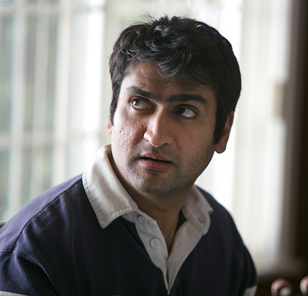

Richard Hendricks
CEO
Richard invented and built the start-up Pied Piper, a program
designed to find music matches, while living at Erlich’s Hacker
Hostel alongside his best friend Big Head and fellow geeks
Dinesh and Gilfoyle. Pied Piper’s compression algorithm
triggered a bidding war and ultimately garnered funding from
Peter Gregory's company Raviga. After winning TechCrunch Disrupt
-- and $50,000 -- Richard and Pied Piper are in the spotlight
more than ever, which for Richard means non-stop thrills (read:
nausea and debilitating panic).
Bertram Gilfoyle
System Architect
Gilfoyle lived and worked at the Hacker Hostel with Richard, Big
Head, and Dinesh. He is pompous and purports to be good at
system architecture, networking, and security. Gilfoyle often
finds himself sparring with Dinesh about things such as their
work efficiency, Dinesh's Pakistani ethnicity, Gilfoyle's
religion along with other negligible matters. Often Gilfoyle
triumphs in these arguments or reaches an impasse with Dinesh.
He is a self-described LaVeyan Satanist, and bears an
upside-down cross tattoo on his right arm. His persona is an
apathetic badass programmer that has libertarian tendencies. To
say he is odd is an understatement.

Dinesh Chugtai
Lead Engineer
Dinesh lives and works in the Hacker Hostel with Richard, Big
Head, and Gilfoyle. He possesses a dry wit and skills at writing
code, particularly Java. Dinesh often finds himself sparring
with Gilfoyle. He is originally from Pakistan but is a US
citizen, unlike Gilfoyle. He claims it took him five years to
get US citizenship and was asked about Al-Qaeda "like 14 times."
Jared Dunn
Head of Business Development
Donald "Jared" Dunn was a Hooli executive and right-hand man to
the head of the company, Gavin Belson, but after gaining a
particular interest in Richard’s algorithm, quit his job at
Hooli to work for Pied Piper. Jared was raised by a series of
foster parents, but despite this rocky early life went on to
study at Vassar College, earning a B. A. in Economics. Although
his real first name is Donald, Gavin Belson started calling him
'Jared' on his first day at Hooli, and the name stuck.
Monica Hall
CFO
Monica joined Raviga in 2010, worked her way up quickly under
Peter’s tutelage, and is now the youngest Associate Partner in
Raviga’s history. Previously, she had been an analyst at
McKinsey and Co., and before that did opposition research for
the 2008 Obama campaign. Monica focuses on software startups.
She also is passionate about both the consumer and healthcare
sectors and has written several scholarly articles regarding
consumer and patient rights. Monica earned her Bachelor of
Science in economics from Princeton University and her MBA from
the Stanford School of Business. Before Peter Gregory's death,
Monica was Raviga’s head of operations, handling the day-to-day
duties of his tech investment business and often fielding
pitches and working directly with tech folks using Peter’s
money. Now she works under Laurie Bream as an associate partner.
Monica took a particular interest in Pied Piper's algorithm from
the beginning and has taken Peter's board seat at Richard's
request.
Erlich Bachman
Incubator Provider, founder of Aviato, Self-Proclaimed Genius
Erlich administers the Hacker Hostel, a tech incubator where
Richard, Big Head, Dinesh, and Gilfoyle live and work in
exchange for 10 percent of their potential businesses. Erlich
clings to his glory days, when he sold aviation start-up Aviato,
a move that, at least in his mind, qualifies him to be a
svengali lording over other tech nerds. He still drives a car
emblazoned with multiple Aviato logos and smokes copious amounts
of weed.